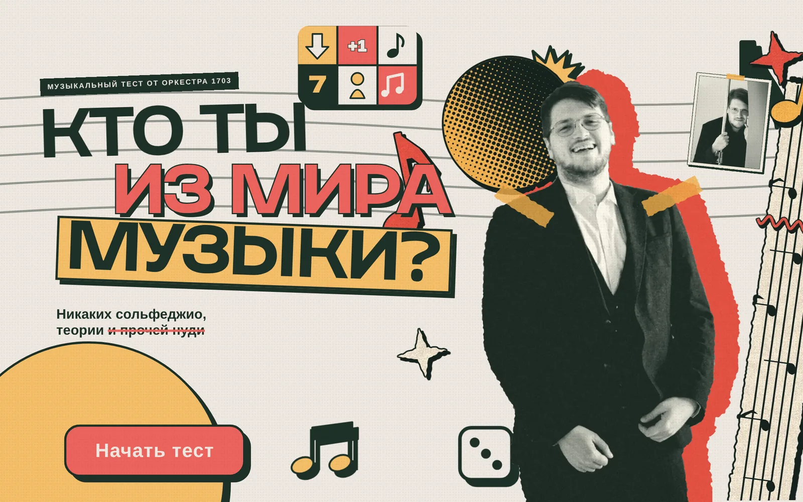
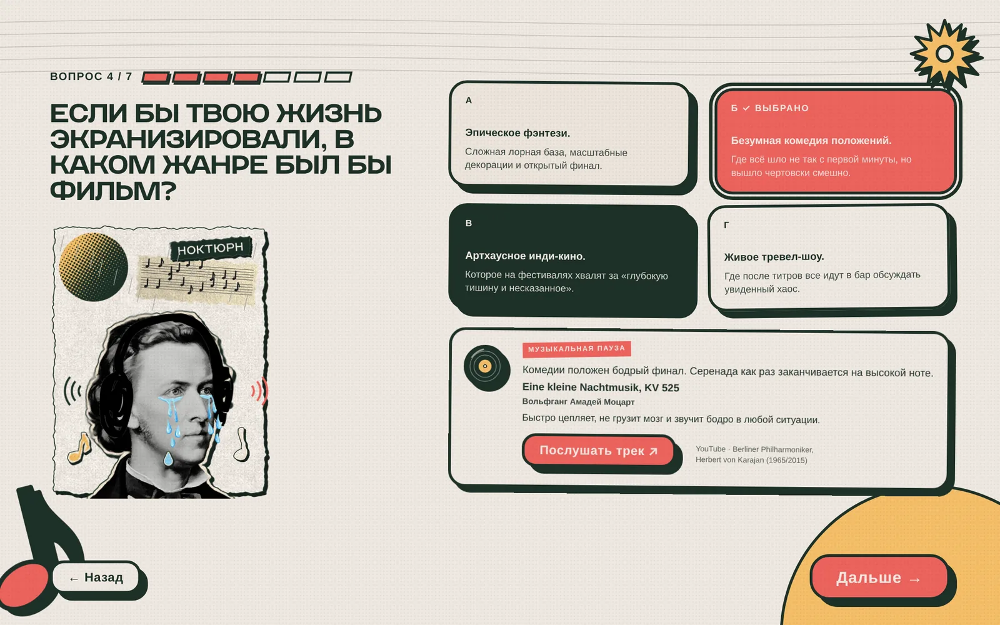
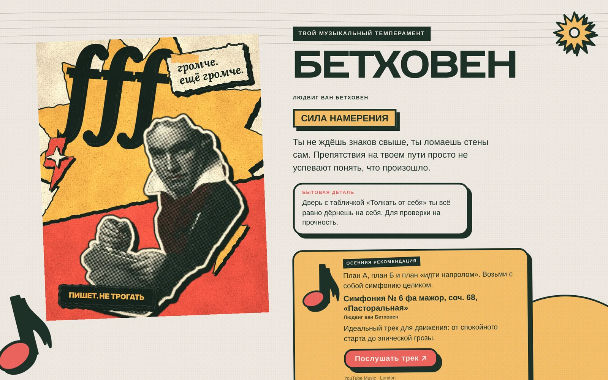
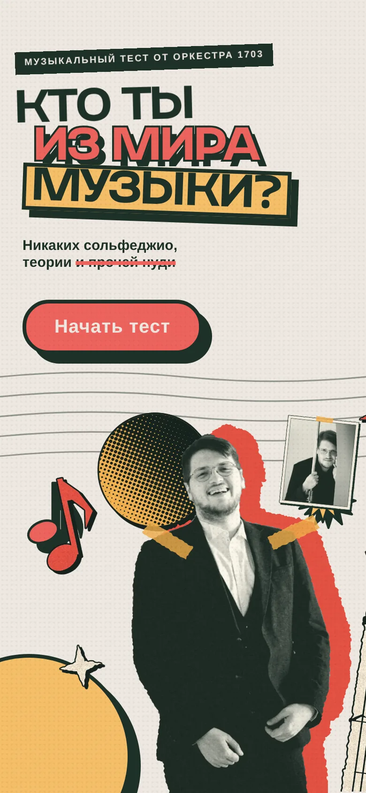
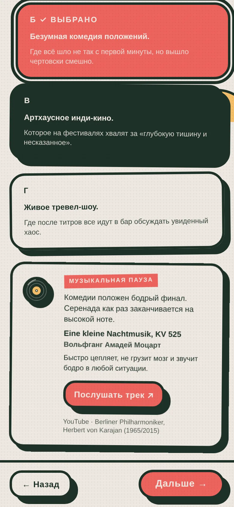
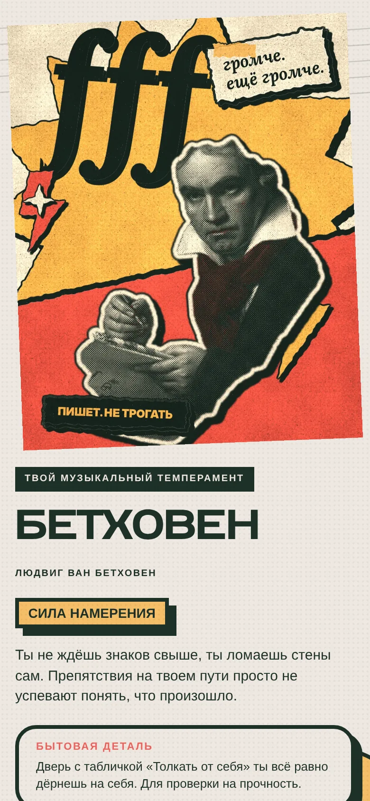

№ 001 · QUIZ1703.EXE
Orchestra 1703: кто ты из мира музыки?
Интерактивный тест на заказ Orchestra 1703: знакомит с оркестром и приводит зрителей на концерты
- Роль
- Дизайн, UX и фронтенд
- Тип
- Спецпроект
- Статус
- Завершен · по заказу оркестра
- Инструменты
- HTML · CSS · JavaScript · React
01 Контекст и цели
Orchestra 1703 — оркестр из Санкт-Петербурга, художественный руководитель — Георгий Федоров. Тест «Кто ты из мира музыки?» сделан по заказу оркестра.
Задача проекта — представить оркестр и привлечь зрителей: чтобы человек послушал произведения и пошел на концерт. Тест работает как воронка: игра → музыка → афиша.
02 Задача
Классику обычно подают как список фактов из истории музыки. Нужно было, чтобы человек без музыкального образования прошел тест до конца, улыбнулся, послушал музыку прямо по ходу — и в конце захотел услышать ее вживую на концерте Orchestra 1703.
03 Концепция и визуальный стиль
Вместо теории — характер: вопросы про сорванные планы, дедлайны, вечеринки и чемодан перед поездкой, а в итоге — композитор-архетип. Тон задан с первого экрана: «Никаких сольфеджио, теории и прочей нуди», а в финале — «Игровой тест, а не диагноз от психотерапевта».
Визуальный язык — редакционная типографика и коллаж: вырезанные портреты композиторов, ноты, винил, кассеты и рваная бумага, жирные обводки и графичные тени. Теплая палитра — глубокий зеленый, коралловый, горчичный и крем. Движение подкрепляет происходящее: экраны въезжают, ответы появляются по очереди, между вопросами проносятся ноты.
Цвет
- Глубокий зеленый#1D3028 · текст, обводки, тени
- Коралловый#EC635D · действия, выбранный ответ
- Горчичный#F4BE68 · плашки, акценты
- Крем#EFE8E1 · фон
- Бумага#E2D6C8 · карточки, коллаж
Шрифты
- Despair Displayзаголовки
- Steppeтекст и интерфейс
- Druzhokдекоративные надписи
04 Ключевые UX/UI-решения
-
Ситуации, а не теория
Каждый вопрос — узнаваемая жизненная ситуация с четырьмя ответами-характерами. Знать музыку не нужно, чтобы пройти тест.
-
Прогресс на виду
Шкала «Вопрос N / 7», кнопки «Назад» и «В начало»: всегда понятно, сколько осталось, и можно передумать.
-
Музыкальная пауза
После ответа появляется плашка с произведением «по настроению» и кнопкой «Послушать трек» — человек знакомится с музыкой уже во время теста, а не только в финале.
-
Результат-постер
Финал — иллюстрированный постер архетипа, эпитет, «бытовая деталь» и осенняя рекомендация: одно произведение, которое стоит послушать сейчас.
-
Из теста — на концерт
Последний блок результата — «Хочешь услышать музыку вживую?» со ссылками на оркестр и его афишу. Тест заканчивается не баллами, а приглашением на концерт.
-
Для всех
Ответы — нативные радиокнопки, фокус переходит на заголовок результата, анимации учитывают настройку «уменьшить движение», раскладка собрана отдельно под телефон.
05 Экраны, макеты и адаптив












06 Реализация
- React 18 без сборщика: компоненты описаны через createElement, данные теста (вопросы, архетипы, треки) вынесены в отдельный объект.
- Сцены композиторов собраны из слоев WebP — портрет, фон и детали анимируются по отдельности.
- Переходы между экранами и появление ответов — CSS-анимации; при prefers-reduced-motion они отключаются.